01.
Hệ Thống Quản Lý Quán Cà Phê – Sangrimar Cafe & Lounge
1
Học phần: Phân tích và Thiết kế Yêu cầu (Mã môn: 502050)
Khoa Công nghệ Thông tin – Trường Đại học Tôn Đức Thắng
2
Giảng viên hướng dẫn: TS. Hồ Thị Linh
Đánh giá đồ án phân tích kỹ nghệ yêu cầu, thiết kế hệ thống và nguyên mẫu phần mềm
3
Nhóm sinh viên thực hiện:
Nguyễn Văn Duy (52400010 – Nhóm trưởng – 34%)
Trần Văn Quý (52400007 – Thành viên – 33%)
Lê Tấn Đạt (52400105 – Thành viên – 33%)
4
Thời lượng báo cáo: 12 – 15 phút (Thuyết trình ~8 phút | 3 Live Demos ~5 phút | Q&A Phản biện)
📌 NOTE: VỊ TRÍ ĐẶT LOGO / KIẾN TRÚC TỔNG QUAN

☕
Kiến Trúc Tổng Thể Sangrimar Cafe & Lounge
Mô hình Modular Monolith 3 tầng All-in-one phục vụ F&B hiện đại.
Sơ đồ Kiến Trúc Tổng Thể Hệ Thống
Gợi ý file: diagram/KienTrucTongThe.svg
"Kính thưa Cô TS. Hồ Thị Linh và toàn thể các bạn sinh viên đang có mặt trong buổi báo cáo bảo vệ đồ án hôm nay! Em tên là Nguyễn Văn Duy – Trưởng nhóm thực hiện. Nhóm chúng em gồm 3 thành viên: em – Nguyễn Văn Duy, bạn Trần Văn Quý và bạn Lê Tấn Đạt. Hôm nay, nhóm chúng em rất vinh dự được đại diện báo cáo đồ án môn học Phân tích và Thiết kế Yêu cầu với đề tài: 'Hệ Thống Quản Lý Quán Cà Phê – Sangrimar Cafe & Lounge'. Toàn bộ giải pháp tập trung giải quyết triệt để các bài toán luồng nghiệp vụ thực tế từ Bán hàng POS, Quản trị Kho định mức BOM đến Chấm công phân ca nhân sự tự động. Sau đây, em xin phép bắt đầu phần trình bày."
02.
Bối Cảnh Thực Tế & 4 "Điểm Nghẽn" Vận Hành Quán Cà Phê & Lounge
1
Bán khống & Sai lệch Order: Nhân viên nhận món không nắm tồn quầy Bar $\rightarrow$ khách đợi 15 phút mới xin lỗi đổi món, vỡ trận giờ cao điểm.
2
Thất thoát tiền mặt & Gian lận: Thu ngân tự ý áp chiết khấu giảm giá hoặc hủy hóa đơn tiền mặt $\rightarrow$ chênh lệch két tiền không bằng chứng truy vết.
3
Kho mù mờ & Âm kho ngầm: Không tính được giá vốn WAC khi giá nhập biến động $\rightarrow$ không đo lường được COGS, không kiểm soát hao hụt đổ vỡ, nhiều thu ngân cùng trừ kho gây Deadlock.
4
Gian lận chấm công & Lệch ca: Chấm công hộ, đi trễ về sớm tranh cãi bảng lương $\rightarrow$ Ca trực thiếu Thu ngân/Quản lý dẫn đến rủi ro đình trệ thu tiền.
📌 NOTE: VỊ TRÍ ĐẶT SƠ ĐỒ CHUYỂN TRẠNG THÁI / PAIN POINTS
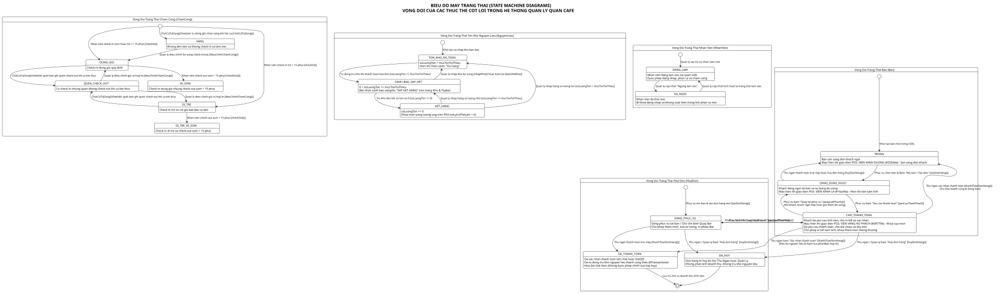
⚠️
4 Điểm Nghẽn Vận Hành F&B Thực Tế
Bán khống, thất thoát tiền mặt, kho mù mờ và gian lận chấm công.
Sơ đồ Máy Trạng Thái (State Machine Diagram)
Gợi ý file: diagram/StateMachine_TrangThai.svg
"Thưa Cô, xuất phát từ việc khảo sát thực tế tại mô hình quán cà phê kết hợp Lounge, nhóm nhận diện 4 điểm nghẽn nghiệp vụ chí mạng: Thứ nhất: Nhân viên nhận order theo cảm tính, không nắm được nguyên liệu quầy Bar còn hay hết, dẫn đến tình trạng bán khống, khách đợi 15 phút mới xin lỗi đổi món. Thứ hai: Nguy cơ thất thoát doanh thu tại quầy thu ngân, nhân viên có thể tự ý áp chiết khấu hoặc cấu kết hủy đơn tiền mặt bỏ túi riêng. Thứ ba: Kho nguyên vật liệu quản lý mù mờ, không đo lường được giá vốn hàng bán WAC, không truy vết được nguyên nhân hao hụt đổ vỡ và nguy cơ Deadlock khi nhiều order thanh toán cùng lúc. Thứ tư: Bất công trong chấm công và thiếu hụt nhân sự trong ca, nhân viên đi trễ về sớm, quên bấm thẻ và ca trực thiếu thu ngân. Đây chính là bài toán thực tiễn nhóm quyết tâm giải quyết triệt để."
03.
Mục Tiêu To-Be & Ma Trận Ranh Giới Hệ Thống (In-Scope vs Out-of-Scope)
🎯
Mục tiêu To-Be: Chuẩn hóa quy trình phục vụ tại bàn SOP 9 bước, tự động hóa khấu trừ nguyên vật liệu theo định mức BOM, tính giá vốn WAC, phân ca cân bằng và chấm công 7 quy tắc BR-CC.
✓
Ranh giới Nội vi (In-Scope):
• POS sơ đồ bàn 3 màu viền, Soft Reservation, In Bar Delta, Phiếu Tạm Tính VietQR, Đóng bàn.
• Kho BOM 12 món, Trừ kho chống Deadlock TreeMap, Sổ nhật ký lich_su_kho, Nhập kho WAC.
• Nhân sự 7 BR-CC, Window 30p, Lưới phân ca cảnh báo thiếu Thu ngân.
✗
Ranh giới Ngoại vi (Out-of-Scope): Không xuất hóa đơn đỏ VAT điện tử (e-invoice cơ quan thuế); Không tích hợp máy quẹt thẻ POS ngân hàng cứng (EDC); Không quản lý chuỗi nhượng quyền đa chi nhánh.
📌 NOTE: VỊ TRÍ ĐẶT SƠ ĐỒ TRIỂN KHAI / RANH GIỚI HỆ THỐNG
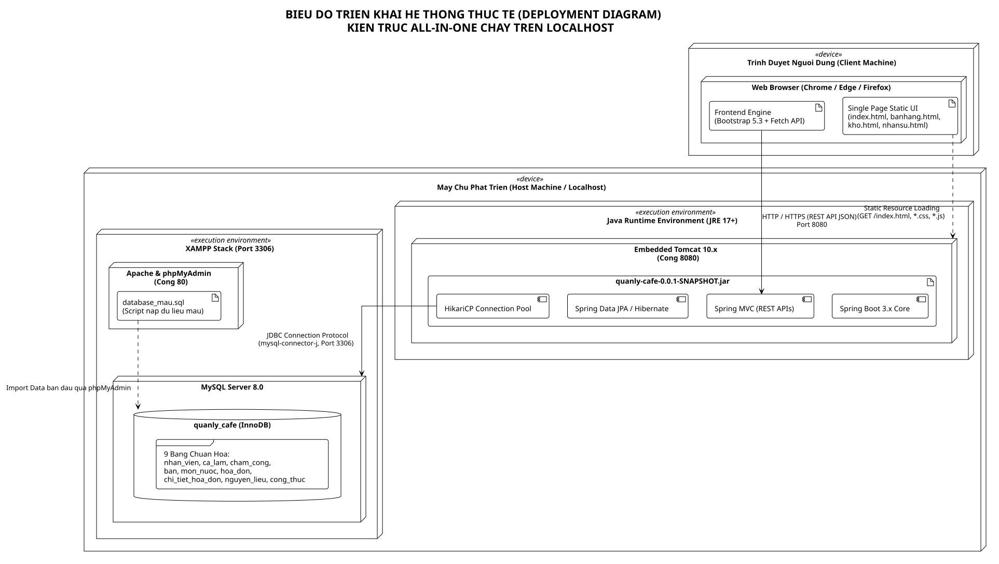
🌐
Sơ Đồ Triển Khai Hệ Thống (Deployment Diagram)
Phân định ranh giới giữa phần mềm nội bộ quán và dịch vụ bên ngoài.
Sơ đồ Triển Khai Hệ Thống (Deployment Diagram)
Gợi ý file: diagram/TrienKhai.svg
"Về mục tiêu hệ thống (To-Be), nhóm hướng tới tự động hóa khép kín 3 trụ cột vận hành F&B: Bán hàng POS chuẩn SOP 9 bước, Quản trị Kho định mức BOM tính giá vốn WAC chống Deadlock, và Nhân sự chấm công thời gian thực với 7 quy tắc BR-CC. Để dự án đạt tính khả thi cao nhất, nhóm phân định ranh giới rõ ràng: Hệ thống tập trung toàn bộ vào nghiệp vụ nội bộ quán (In-Scope). Các nghiệp vụ liên quan đến cơ quan thuế như xuất hóa đơn đỏ VAT điện tử, tích hợp thiết bị quẹt thẻ POS ngân hàng cứng, hoặc mô hình chuỗi đa chi nhánh được đưa vào Out-of-Scope trong phạm vi đề tài này."
04.
Kiến Trúc 3 Tầng Modular Monolith & An Ninh Phân Quyền RBAC
1
Tầng Trình Diễn (Presentation Tier): Web SPA HTML5/CSS3/Vanilla JS, phong cách Notebook hiện đại, tối ưu in nhiệt @media print, thời gian tải trang dưới $50\text{ms}$.
2
Tầng Nghiệp Vụ (Application Tier): Spring Boot 3.2.5 với 9 REST Controllers, giao dịch nguyên tử @Transactional(isolation = READ_COMMITTED), scheduler @Scheduled 03:00 AM chốt ca tự động, Spring Bean java.time.Clock kiểm soát thời gian.
3
Tầng Dữ Liệu (Database Tier): MySQL 8.0 chuẩn 3NF gồm 11 bảng quan hệ toàn vẹn ACID, bổ sung Sổ nhật ký biến động lich_su_kho.
4
Phân quyền RBAC 3 cấp: PHUC_VU $\subset$ THU_NGAN $\subset$ QUAN_LY bảo vệ dòng tiền mặt và an toàn dữ liệu.
📌 NOTE: VỊ TRÍ ĐẶT CẤU TRÚC GÓI SPRING BOOT
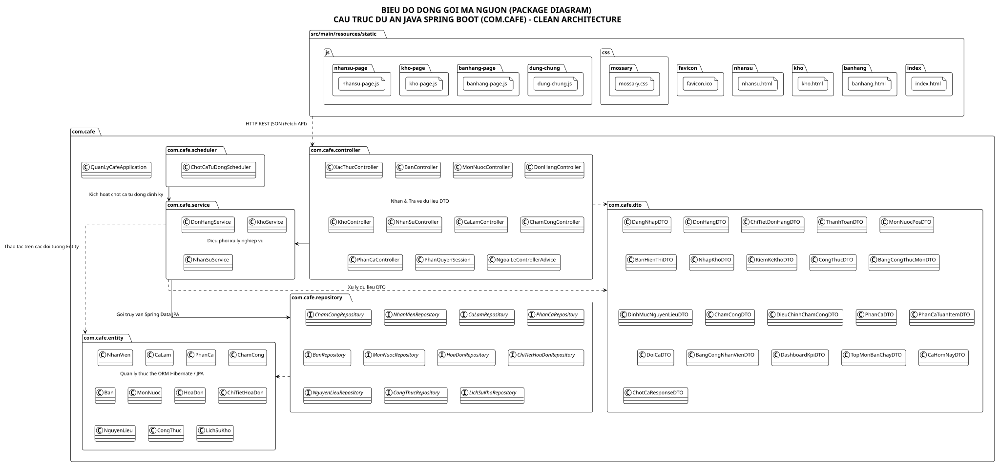
🏗️
Sơ Đồ Phân Tầng Gói Ứng Dụng (Package Diagram)
Phân tầng Controller - Service - Repository - Entity chuẩn Enterprise.
Sơ đồ Cấu Trúc Gói Spring Boot 3.2.5
Gợi ý file: diagram/Package_SpringBoot.svg
"Về mặt kiến trúc kỹ thuật, hệ thống được thiết kế theo mô hình All-in-One Modular Monolith 3 tầng chuẩn mực: Tầng Client là Web SPA thuần tông sáng, tải cực nhanh dưới 50ms và tối ưu in nhiệt. Tầng Ứng dụng là máy chủ Spring Boot 3.2.5 với 9 REST Controllers, giao dịch nguyên tử @Transactional chống Deadlock và tiêm Spring Bean java.time.Clock hỗ trợ kiểm thử tự động 100%. Tầng Dữ liệu là MySQL 8.0 chuẩn 3NF gồm 11 bảng thực thể. Hệ thống thiết lập ma trận phân quyền 3 cấp chặt chẽ: Phục vụ thuộc tập con Thu ngân, và Thu ngân thuộc tập con Quản lý. Sau đây, em xin kính mời bạn Trần Văn Quý trình bày về phân hệ Bán hàng POS và trực tiếp Demo."
05.
Danh Mục 15 Yêu Cầu Chức Năng (FRs) & Bảng Phân Cấp MoSCoW
M
Must Have (8 FRs cốt lõi): Mở bàn gọi món, In Bar Delta, Phiếu Tạm Tính VietQR, Thanh toán đóng bàn, Trừ kho BOM chống Deadlock, Nhập kho WAC, Chấm công cá nhân, Phân ca cân bằng vai trò.
S
Should Have (4 FRs quan trọng): Thực đơn Soft Reservation / Bottleneck, Cảnh báo tồn kho đỏ, Quản lý duyệt điều chỉnh công có lý do, Executive KPI Dashboard.
C
Could Have (2 FRs tiện ích): In lại hóa đơn lịch sử, Bộ lọc thời gian KPI đa chu kỳ (Hôm nay, 7 ngày, Tháng, Toàn thời gian).
W
Won't Have (Giai đoạn này): Đặt bàn trực tuyến từ xa, Tích điểm thành viên CRM, Xuất hóa đơn đỏ VAT điện tử.
📌 NOTE: VỊ TRÍ ĐẶT LUỒNG ĐIỀU HƯỚNG GIAO DIỆN
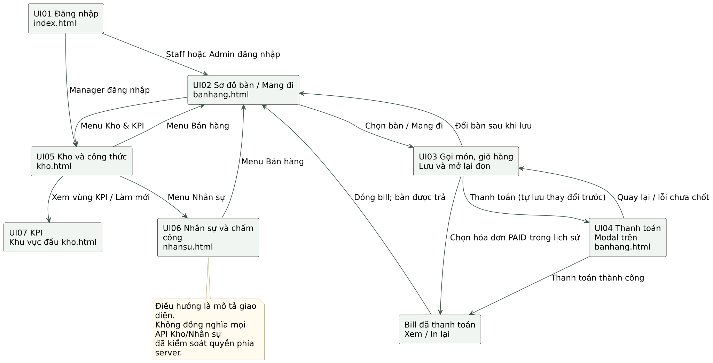
🗺️
Luồng Điều Hướng Giao Diện (UI Navigation Flow)
Sơ đồ luồng chuyển màn hình POS - Kho - Nhân sự theo vai trò.
Sơ đồ Luồng Điều Hướng Giao Diện Người Dùng
Gợi ý file: 02_SourceCode_WebJava_Prototype/BanGiao_UML/UI_Navigation_Flow.svg
"Em xin chào Cô và các bạn! Em tên là Trần Văn Quý. Em xin phép trình bày về Danh mục 15 Yêu cầu chức năng được nhóm phân cấp chặt chẽ theo ma trận MoSCoW: Nhóm ưu tiên tuyệt đối nhóm Must Have gồm 8 chức năng sống còn: từ mở bàn, in bar delta, in tạm tính VietQR, thu tiền đóng bàn, trừ kho BOM chống Deadlock, nhập kho WAC đến chấm công và phân ca cân bằng. Nhóm Should Have gồm 4 chức năng nâng cao trải nghiệm và kiểm soát: tính số ly có thể làm theo Soft Reservation, cảnh báo tồn đỏ, duyệt điều chỉnh công và Executive KPI Dashboard. Nhóm Could Have gồm các tiện ích tra cứu in lại hóa đơn và lọc thời gian. Cuối cùng là Won't Have cho giai đoạn hiện tại như đặt bàn online hay hóa đơn VAT điện tử."
06.
Biểu Đồ Use Case Tổng Quát (30 Ca Sử Dụng) & Phân Cấp 3 Vai Trò
1
Actor Phục vụ (PHUC_VU – 10 UCs): Xem sơ đồ bàn, mở bàn, chọn món, in Bar ticket, gọi thêm món (in delta), yêu cầu tính tiền, xem lịch phân ca, tự chấm công.
2
Actor Thu ngân (THU_NGAN – Kế thừa Phục vụ + 8 UCs): In Phiếu Tạm Tính kèm VietQR động, nhận tiền khách, tính tiền thối, xác nhận thanh toán & đóng bàn, in Hóa đơn bán hàng nhiệt.
3
Actor Quản lý (QUAN_LY – Kế thừa Thu ngân + 12 UCs): Toàn quyền nhập kho WAC, kiểm kê hao hụt, thiết lập BOM, phân ca tuần kiểm soát cân bằng, duyệt điều chỉnh công, áp chiết khấu giảm giá, xem KPI tài chính.
📌 NOTE: VỊ TRÍ ĐẶT BIỂU ĐỒ USE CASE TỔNG QUÁT

👥
Biểu Đồ Use Case Tổng Quát (UML 2.5)
30 Ca sử dụng và 3 tác tử kế thừa quyền hạn phân tầng.
Biểu đồ Use Case Tổng Quát (30 Ca Sử Dụng)
Gợi ý file: diagram/UseCaseTongQuat.svg
"Trên màn hình là Biểu đồ Use Case tổng quát gồm 30 ca sử dụng chuẩn hóa UML 2.5 với 3 tác tử chính: Nhân viên Phục vụ sở hữu 10 ca sử dụng tác nghiệp bàn và tự chấm công. Thu ngân kế thừa toàn bộ quyền của Phục vụ, được bổ sung 8 ca sử dụng quản lý dòng tiền: in tạm tính VietQR, nhận tiền, đóng bàn và in hóa đơn bán hàng. Cuối cùng, Quản lý kế thừa toàn bộ quyền của Thu ngân và nắm độc quyền 12 ca sử dụng quản trị cấp cao: nhập kho WAC, kiểm kê hao hụt, phân ca tuần, duyệt sửa công, xem KPI và đặc biệt là áp dụng chiết khấu giảm giá. Phân cấp kế thừa này bảo đảm tính toàn vẹn và an toàn tuyệt đối cho hệ thống."
07.
Nghiệp Vụ POS: Sơ Đồ Bàn 3 Màu Viền & Cơ Chế Soft Reservation
1
Sơ đồ bàn thời gian thực (3 màu viền chuẩn mực):
• Viền Xanh dương (TRONG): Bàn trống sẵn sàng đón khách.
• Viền Xanh lá (DANG_DUNG_NUOC): Đang phục vụ, hiển thị tiền tạm tính.
• Viền Vàng (CHO_THANH_TOAN): Khách xin tính tiền $\rightarrow$ KHÓA SỬA MÓN, phục vụ không thể thêm/bớt món.
2
Cơ chế Soft Reservation & Thắt cổ chai nguyên liệu:
• Tự động tính: $\text{soLyCoTheLam} = \min_{nl} \lfloor (\text{Ton} - \text{Giu}) / \text{BOM} \rfloor$.
• Che giấu tồn gốc: Chỉ hiện nhãn Xanh (> 5 ly), Vàng (1-5 ly), Đỏ (Hết món - Khóa nút thêm). Triệt tiêu $100\%$ bán khống!
📌 NOTE: VỊ TRÍ ĐẶT ẢNH GIAO DIỆN SƠ ĐỒ BÀN POS
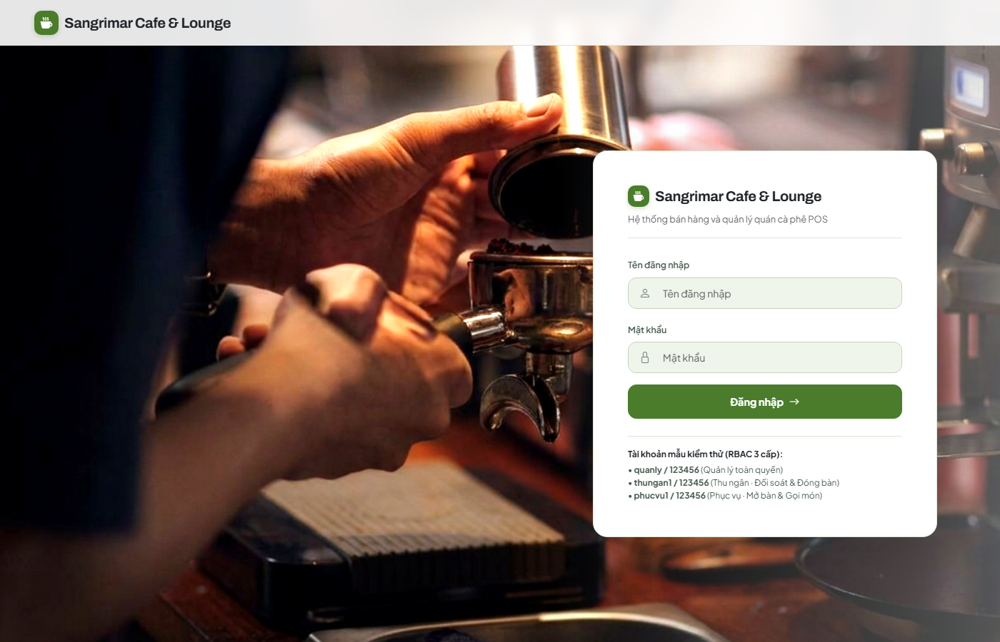
🪑
Giao Diện Sơ Đồ Bàn POS (3 Màu Viền & Soft Reservation)
Trực quan hóa trạng thái bàn và số ly có thể làm theo nguyên lý thắt cổ chai.
Giao Diện POS Sơ Đồ Bàn & Thực Đơn Khả Dụng
Gợi ý file: screenshots/02_pos_phuc_vu_so_do_ban.png
"Tiếp theo là Phân hệ Bán hàng POS – trái tim tác nghiệp của quán: Sơ đồ bàn trực quan hóa 3 trạng thái màu sắc viền chuẩn mực: Viền Xanh dương là Bàn trống. Khi mở bàn, chuyển sang viền Xanh lá báo đang dùng nước kèm tổng tiền tạm tính. Khi khách xin bill, bàn chuyển viền Vàng hổ phách Chờ thanh toán. Lúc này, quyền sửa món bị khóa chặt để tránh sai lệch đối soát. Điểm đột phá của thực đơn POS là cơ chế Giữ chỗ mềm (Soft Reservation) và tính 'Số ly có thể làm' theo nguyên lý thắt cổ chai nguyên liệu. Hệ thống che giấu tồn gốc với nhân viên, chỉ trả về số ly khả dụng: Xanh là trên 5 ly, Vàng là 1 đến 5 ly, và Đỏ là Hết món tự khóa nút thêm. Nhờ vậy, nhân viên không bao giờ bán khống món đã hết nguyên liệu!"
08.
Chu Trình SOP 9 Bước, Cơ Chế In Bar Delta & Bộ 3 Phiếu In Nghiệp Vụ
1
Chu trình SOP 9 bước phục vụ tại bàn: Khách vào $\rightarrow$ Mở bàn $\rightarrow$ Chọn món Soft Reservation $\rightarrow$ In Bar Ticket $\rightarrow$ Khách gọi thêm $\rightarrow$ In Bar Delta $\rightarrow$ Yêu cầu tính tiền $\rightarrow$ In Tạm Tính VietQR $\rightarrow$ Thu ngân đóng bàn & Trừ kho.
2
Cơ chế In Bar Delta ($\Delta$): Bảng chi_tiet_hoa_don có cột so_luong_da_in_bar. Khi gọi thêm, lệnh in Bar chỉ lấy phần chênh lệch $\text{soLuong} - \text{soLuongDaIn} > 0$. Triệt tiêu $100\%$ quầy Bar pha chế trùng lặp!
3
Bộ 3 mẫu phiếu in chuẩn hóa:
• Phiếu Pha Chế (Bar Ticket): Bàn, Món, SL, Ghi chú (KHÔNG hiện giá).
• Phiếu Tạm Tính (Proforma Bill): Chi tiết món, Đơn giá snapshot, VietQR động.
• Hóa Đơn Bán Hàng: Đầy đủ mã HĐ, chiết khấu, tiền khách đưa, tiền thối, đóng bàn.
📌 NOTE: VỊ TRÍ ĐẶT SƠ ĐỒ TUẦN TỰ POS / MẪU PHIẾU IN
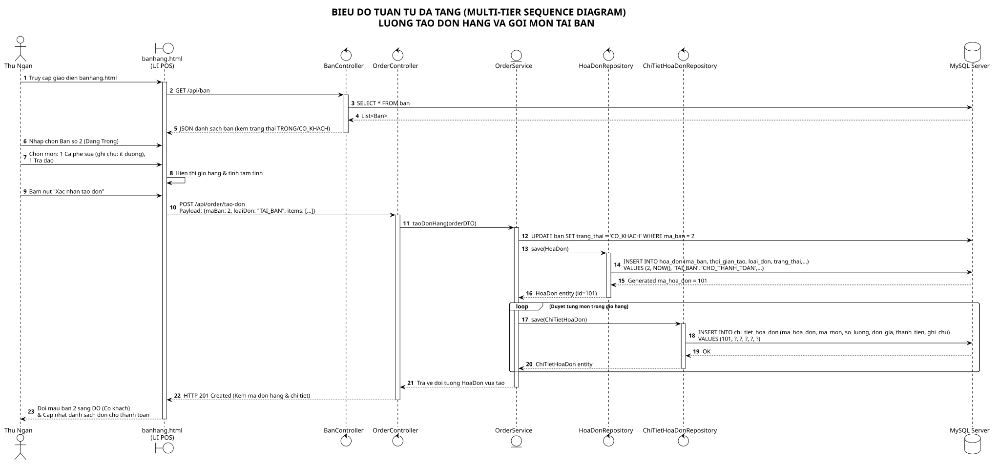
🧾
Sơ Đồ Tuần Tự Bán Hàng POS (Sequence Diagram)
Luồng tương tác giữa Phục vụ, Thu ngân, Hệ thống và Quầy Bar.
Sơ đồ Tuần Tự Chu Trình Bán Hàng POS
Gợi ý file: diagram/Sequence_POS.svg
"Quy trình nghiệp vụ bán hàng diễn ra chặt chẽ theo chu trình chuẩn SOP 9 bước: Khách vào chọn bàn, phục vụ mở bàn chọn món theo thực đơn khả dụng, bấm In Bar gửi phiếu pha chế xuống quầy Bar. Đặc biệt, khi khách gọi thêm món, nhờ cơ chế In Bar Delta, hệ thống chỉ in đúng các món mới phát sinh, hoàn toàn không in lại các món đã pha trước đó, tránh lãng phí nguyên liệu. Khi khách báo tính tiền, phục vụ bấm Yêu cầu thanh toán để khóa bàn. Thu ngân in Phiếu Tạm Tính kèm VietQR động mang ra cho khách đối soát. Sau khi nhận tiền, Thu ngân bấm Xác nhận thanh toán & Đóng bàn: hệ thống xuất hóa đơn nhiệt, kích hoạt trừ kho BOM ngầm và giải phóng bàn về trạng thái Trống."
09.
[LIVE DEMO 1] Bán Hàng POS: Mở Bàn, In Bar Delta & Đóng Bàn
🎬 TRỰC QUAN HÓA THAO TÁC DEMO THỰC TẾ (banhang.html)
Mô phỏng trọn vẹn luồng phục vụ khách tại Bàn 03 qua 2 vai trò Phục vụ & Thu ngân:
1
Đăng nhập Phục vụ: Chọn Bàn 03 (Xanh dương) $\rightarrow$ Xem Menu Soft Reservation còn 8 ly Cà phê Muối, 5 ly Caffe Latte.
2
Mở bàn & Gọi món: Gọi 1 Cà phê Muối, 1 Caffe Latte (Ít đường, sữa nóng) $\rightarrow$ Bàn chuyển Viền Xanh lá (DANG_DUNG_NUOC).
3
In Bar & Gọi thêm Delta: In Bar lần 1 $\rightarrow$ Gọi thêm 1 Trà Đào $\rightarrow$ In Bar lần 2 $\rightarrow$ Chỉ in đúng 1 ly Trà Đào!
4
Yêu cầu tính tiền: Bàn chuyển Viền Vàng hổ phách (CHO_THANH_TOAN) $\rightarrow$ Khóa sửa món bảo đảm số liệu.
5
Thu ngân đóng bàn: Đăng nhập thungan $\rightarrow$ In Tạm Tính VietQR $\rightarrow$ Khách trả 150k, thối 35k $\rightarrow$ Đóng bàn, trừ kho ngầm, Bàn 03 về Xanh dương.
📌 NOTE: VỊ TRÍ ĐẶT SƠ ĐỒ HOẠT ĐỘNG POS DEMO
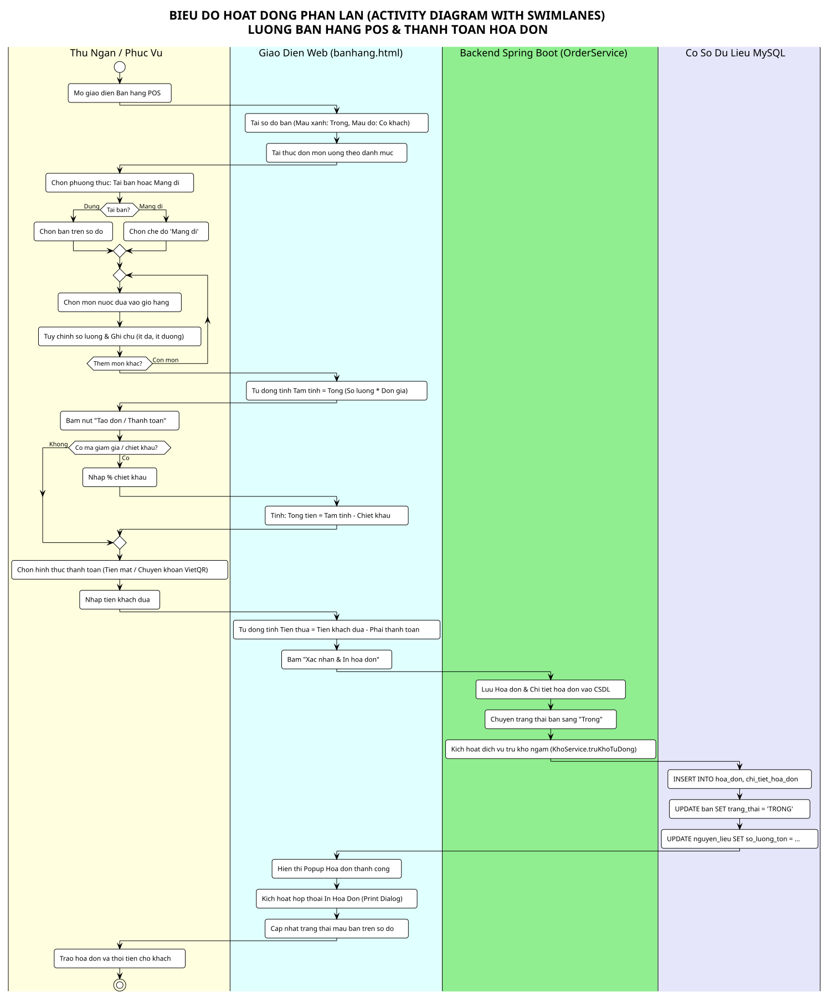
☕
Sơ Đồ Hoạt Động Bán Hàng POS (Activity Diagram)
Minh họa các bước rẽ nhánh từ mở bàn đến in bill và đóng bàn.
Sơ đồ Hoạt Động Bán Hàng POS (Activity Diagram)
Gợi ý file: diagram/Activity_POS.svg
"(Quý thao tác trực tiếp trên trình duyệt) Thưa Cô, tại trang đăng nhập index.html, em dùng nút điền nhanh 'Phục vụ' để đăng nhập 1 chạm. Hệ thống vào thẳng banhang.html. Em chọn Bàn 03 đang trống (viền Xanh dương). Món Cà phê Muối báo còn 8 ly, Caffe Latte còn 5 ly. Em gọi 1 ly Cà phê Muối, 1 ly Caffe Latte ghi chú 'Ít đường, sữa nóng', tạm tính là 77.000 đ. Em bấm 'Mở bàn & Tạo đơn' -> Bàn 03 chuyển ngay sang viền Xanh lá ĐANG_DUNG_NUOC. Em bấm 'In Bar' xuất phiếu pha chế. Khách gọi thêm 1 Trà Đào Cam Sả, em bấm thêm vào giỏ. Bấm 'In Bar' lần 2: phiếu in chỉ xuất đúng 1 ly Trà Đào vừa gọi, không hề in lại 2 ly trước! Khách xin tính tiền, em bấm 'Yêu cầu thanh toán' -> Bàn 03 chuyển viền Vàng CHO_THANH_TOAN và khóa sửa món. Bây giờ em chuyển sang tài khoản Thu ngân: bấm 'In Tạm Tính' có VietQR động, nhập khách đưa 150.000 đ, hệ thống tính tiền thối 35.000 đ. Ô chiết khấu bị khóa disabled hoàn toàn. Em bấm 'Xác nhận thanh toán & Đóng bàn' -> Hóa đơn bán hàng xuất hiện, hệ thống trừ kho ngầm, và Bàn 03 trở về màu Xanh dương Trống sẵn sàng đón khách! Phần tiếp theo, em xin nhường lời cho bạn Lê Tấn Đạt."
10.
Yêu Cầu Phi Chức Năng (NFR) & Thiết Kế CSDL 11 Bảng Chuẩn 3NF
1
4 Chỉ số NFR cốt lõi: Phản hồi API $< 200\text{ms}$, Tải trang $< 50\text{ms}$, Khả dụng $99.9\%$, Toàn vẹn dữ liệu ACID $100\%$.
2
11 Bảng CSDL Chuẩn 3NF:
• Bán hàng (4): ban_ca_phe, mon_nuoc, hoa_don, chi_tiet_hoa_don.
• Kho (3): nguyen_lieu, dinh_muc_mon, lich_su_kho (Sổ cái kiểm toán biến động).
• Nhân sự (4): nhan_vien, ca_lam_viec, phan_ca, cham_cong.
3
Kỹ thuật chống lỗi nghiệp vụ:
• don_gia_luc_ban: Price Snapshot bảo vệ tính bất biến chứng từ lịch sử.
• so_luong_da_in_bar: Kiểm soát in Delta không lặp lại.
• @Version: Khóa lạc quan chống ghi đè hóa đơn song song.
📌 NOTE: VỊ TRÍ ĐẶT SƠ ĐỒ THỰC THỂ LIÊN KẾT ERD

🗄️
Sơ Đồ Thực Thể Liên Kết (ERD 11 Bảng Chuẩn 3NF)
11 bảng quan hệ ACID và Sổ cái biến động kho lich_su_kho.
Sơ đồ Thực Thể Liên Kết CSDL (11 Bảng Chuẩn 3NF)
Gợi ý file: diagram/ERD_DuLieu.svg
"Em xin kính chào Cô và các bạn! Em tên là Lê Tấn Đạt. Về mặt phi chức năng NFR, hệ thống đạt hiệu năng phản hồi API dưới 200ms, tải trang cực nhẹ dưới 50ms và bảo đảm toàn vẹn dữ liệu ACID 100%. Về thiết kế CSDL, hệ thống gồm 11 bảng chuẩn hóa 3NF chia làm 3 phân hệ: Bán hàng 4 bảng, Kho 3 bảng và Nhân sự 4 bảng. Bảng thứ 11 mới bổ sung là lich_su_kho – đóng vai trò cuốn Sổ cái điện tử ghi nhận biến động 3 loại giao dịch: NHAP_KHO, XUAT_BAN_HANG và KIEM_KE_HAO_HUT. Đặc biệt, nhóm áp dụng kỹ thuật Price Snapshot lưu don_gia_luc_ban trong chi tiết hóa đơn: nếu sau này giá món thay đổi, doanh thu lịch sử cũ vẫn giữ nguyên tính bất biến vĩnh viễn, kèm so_luong_da_in_bar để in delta và @Version chống ghi đè song song."
11.
Nghiệp Vụ Nhân Sự: Phân Ca Cân Bằng & 7 Quy Tắc Chấm Công BR-CC
1
Lưới phân ca kiểm soát cân bằng vai trò (BR-CC-07): Bắt buộc mỗi ca trực phải có ít nhất 1 Thu ngân hoặc 1 Quản lý. Nếu ca chỉ có Phục vụ $\rightarrow$ Bật cảnh báo viền cam nét đứt thieuThuNgan = true.
2
7 Quy tắc Chấm công chuẩn mực (BR-CC-01..07):
• BR-CC-01, 02: Ràng buộc 1:1 phân ca; Cửa sổ check-in $[\text{start} - 30p, \text{end})$.
• BR-CC-03, 04: Du di 15p: trễ $\le 15p$ tính đúng giờ, $> 15p$ đi trễ; Clamped giờ thực tế, cảnh báo về sớm $> 15p$, nhân hệ số đêm 1.2.
• BR-CC-05: @Scheduled 03:00 AM tự động chốt VANG / QUEN_CHECK_OUT.
• BR-CC-06: Quản lý điều chỉnh bắt buộc nhập lý do, lưu vết kiểm toán.
📌 NOTE: VỊ TRÍ ĐẶT SƠ ĐỒ HOẠT ĐỘNG CHẤM CÔNG
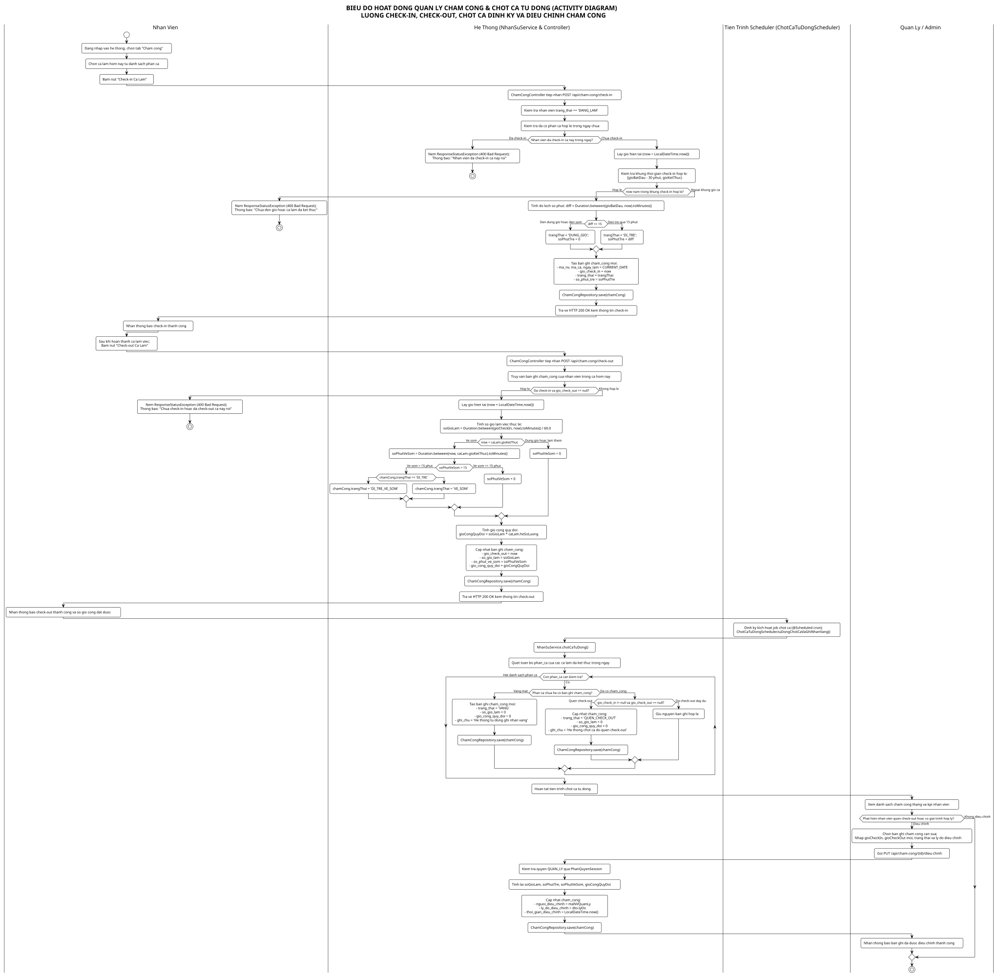
⏰
Sơ Đồ Hoạt Động Chấm Công (Activity Diagram)
7 Quy tắc BR-CC kiểm soát chặt chẽ giờ công và cân bằng nhân sự ca.
Sơ đồ Hoạt Động Chấm Công Nhân Sự (7 Quy Tắc BR-CC)
Gợi ý file: diagram/Activity_ChamCong.svg
"Điểm sáng tạo của Phân hệ Nhân sự là cơ chế kiểm soát cân bằng ca và 7 Quy tắc Chấm công chuẩn hóa BR-CC: Trên Lưới phân ca tuần, hệ thống áp dụng Quy tắc BR-CC-07: Bắt buộc mỗi ca trực phải có ít nhất 1 Thu ngân hoặc 1 Quản lý. Nếu ca chỉ có Phục vụ, ô ca lập tức bật viền cam nét đứt và nhãn cảnh báo 'THIẾU THU NGÂN / QUẢN LÝ' để tránh vỡ trận thu tiền. Về chấm công, hệ thống kiểm soát qua 6 quy tắc nghiêm ngặt: check-in trong cửa sổ 30 phút, áp dụng du di 15 phút chống phạt oan nhân viên, tính giờ clamped không cộng dồn giờ ảo khi đến sớm, nhân hệ số ca tối 1.2, scheduler 03:00 sáng tự động chốt vắng hoặc quên checkout, và Quản lý điều chỉnh công bắt buộc nhập lý do có lưu vết kiểm toán minh bạch 100%."
12.
[LIVE DEMO 2] Chấm Công Cá Nhân & Phân Ca Cân Bằng Vai Trò
🎬 TRỰC QUAN HÓA THAO TÁC DEMO THỰC TẾ (nhansu.html)
Minh chứng chấm công thời gian thực & kiểm soát cân bằng nhân sự:
1
Chế độ Cá nhân (phucvu): Đồng hồ chạy thời gian thực $\rightarrow$ Bấm "Check-in Ca Lam" (Ca Sáng 07:00-12:00) $\rightarrow$ Quá 07:15 ghi nhận DI_TRE kèm số phút trễ $\rightarrow$ Nút đổi thành "Check-out".
2
Lưới Phân Ca Quản Trị (quanly): Quan sát Ca Tối Thứ Tư chỉ có Phục vụ $\rightarrow$ Ô ca bật viền cam nét đứt + badge CẢNH BÁO: THIẾU THU NGÂN $\rightarrow$ Phân thêm Thu ngân $\rightarrow$ Cảnh báo biến mất!
3
Quản lý Duyệt Điều Chỉnh Công: Bấm "Điều chỉnh" ca quên check-out $\rightarrow$ Nhập giờ ra và lý do: "Dọn quầy, camera xác nhận 12:15" $\rightarrow$ Lưu vết kiểm toán người sửa, giờ sửa minh bạch.
📌 NOTE: VỊ TRÍ ĐẶT SƠ ĐỒ TUẦN TỰ CHẤM CÔNG
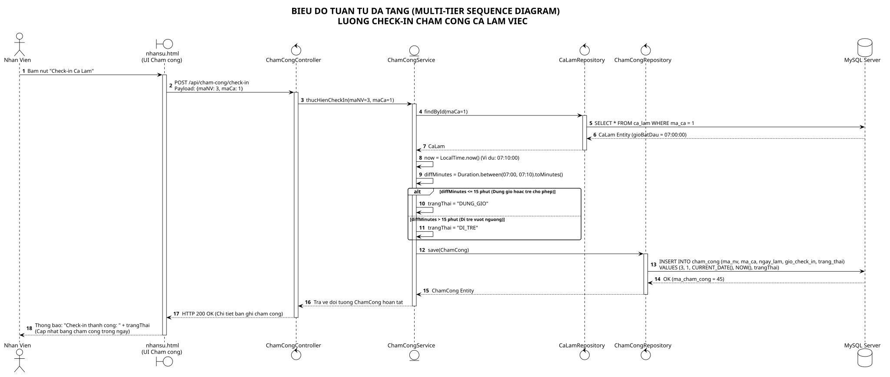
📋
Sơ Đồ Tuần Tự Chấm Công (Sequence Diagram)
Tương tác giữa Nhân viên, Quản lý, Service và CSDL.
Sơ đồ Tuần Tự Chấm Công & Quản Lý Ca Trực
Gợi ý file: diagram/Sequence_ChamCong.svg
"(Đạt thao tác trực tiếp trên trình duyệt) Thưa Cô, em đăng nhập tài khoản phucvu truy cập nhansu.html: Phục vụ chỉ thấy Chế độ Cá nhân với lịch ca của mình và đồng hồ số chạy thời gian thực. Em được xếp Ca Sáng (07:00 - 12:00). Em bấm 'Check-in Ca Lam' -> Vì hiện tại đã quá 07:15, hệ thống lập tức ghi nhận trạng thái 'DI_TRE' và hiển thị rõ số phút trễ. Nút bấm tự động đổi thành 'Check-out Ca Lam'. Bây giờ em đăng nhập tài khoản Quản lý: màn hình mở khóa thêm Chế độ Quản trị. Tại Lưới Phân Ca Tuần, kính mời Cô quan sát ô Ca Tối Thứ Tư: nhóm em chỉ xếp 1 Phục vụ. Lập tức Quy tắc BR-CC-07 được kích hoạt: ô ca hiển thị viền cam nét đứt kèm huy hiệu cảnh báo 'CẢNH BÁO: THIẾU THU NGÂN / QUẢN LÝ'. Em phân công thêm bạn Trần Văn Quý (Thu ngân) vào ca -> Cảnh báo cam lập tức biến mất! Tại bảng Lịch sử Chấm công, Quản lý bấm 'Điều chỉnh' ca quên checkout, nhập giờ ra và lý do giải trình. Sau khi lưu, hệ thống tính lại giờ công quy đổi và ghi nhận vết người sửa rõ ràng. Tiếp theo, em xin mời Trưởng nhóm Nguyễn Văn Duy trình bày Phân hệ Kho và Live Demo Trừ kho tự động."
13.
Nghiệp Vụ Kho: Định Mức BOM 12 Món & Công Thức Giá Vốn WAC
1
13 Nguyên vật liệu thực tế $100\%$ cấu thành 34 dòng BOM cho 12 món:
• Cà phê Robusta ($15\text{g}$), Arabica ($10\text{g}$), Sữa tươi tiệt trùng ($150\text{ml}$), Sữa đặc Ngôi Sao ($25\text{ml}$), Kem béo Rich's ($30\text{ml}$),...
2
Công thức Giá vốn Bình quân Gia quyền (WAC – Weighted Average Cost):
• $\text{WAC}_{\text{mới}} = \frac{(\text{Tồn cũ} \times \text{Đơn giá cũ}) + (\text{SL nhập} \times \text{Đơn giá nhập})}{\text{Tồn cũ} + \text{SL nhập}}$.
• Tự động tính toán lại giá vốn hàng bán (COGS) chuẩn xác theo biến động giá thị trường.
3
Ngưỡng an toàn & Cảnh báo tồn đỏ: Tồn kho $\le$ Ngưỡng tối thiểu $\r\rightarrow$ Bật nhãn đỏ nhấp nháy "SẮP HẾT HÀNG", tự động kéo tụt soLyCoTheLam trên POS.
📌 NOTE: VỊ TRÍ ĐẶT SƠ ĐỒ LỚP MIỀN BOM & WAC
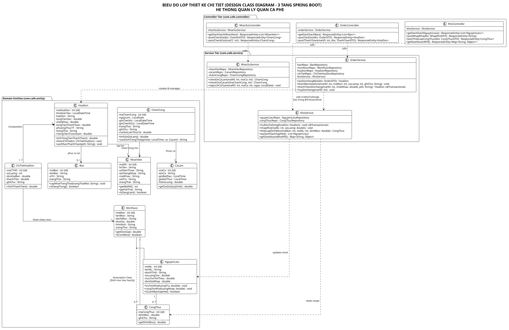
📦
Sơ Đồ Lớp Miền Định Mức BOM (Class Diagram)
Mô hình quan hệ Món nước - Định mức BOM - Nguyên liệu và Giá vốn WAC.
Sơ đồ Lớp Miền (Class Diagram) Phân Hệ Kho & BOM
Gợi ý file: diagram/ClassDiagram.svg
"Kính thưa Cô, em xin tiếp tục với Phân hệ Quản trị Kho – hạt nhân kỹ thuật kiểm soát tài chính của Sangrimar Cafe & Lounge: Hệ thống chuẩn hóa 13 nguyên vật liệu thực tế cấu thành 34 dòng định mức BOM cho 12 món nước Sangrimar. Mỗi khi nhập hàng, hệ thống áp dụng phương pháp Giá vốn Bình quân Gia quyền liên hoàn (WAC): đơn giá vốn được tính toán lại tự động theo tỷ trọng khối lượng và giá mới, bảo đảm báo cáo giá vốn hàng bán COGS luôn phản ánh trung thực biến động thị trường. Đồng thời, hệ thống thiết lập ngưỡng an toàn cho từng nguyên liệu: khi tồn kho chạm ngưỡng tối thiểu, hệ thống lập tức bật nhãn đỏ nhấp nháy 'SẮP HẾT HÀNG' và tự động khóa món tương ứng trên thực đơn POS."
14.
Nghiệp Vụ Kho: Thuật Toán Trừ Kho Chống Deadlock & Kiểm Kê Hao Hụt
1
Bài toán Deadlock giờ cao điểm: Nhiều bàn cùng thanh toán các món dùng chung nguyên liệu (Sữa tươi, Robusta) $\rightarrow$ Khóa chéo gây tê liệt quầy thu ngân.
2
Thuật toán Sangrimar:
• Dùng TreeMap<Long, Double> gom nguyên liệu và sắp xếp tăng dần theo ma_nl ($1 \r\rightarrow 2 \r\rightarrow 3$).
• Khóa bi quan SELECT ... FOR UPDATE theo đúng thứ tự tăng dần trong @Transactional(isolation = READ_COMMITTED).
• Triệt tiêu $100\%$ điều kiện Circular Wait, chống âm kho tuyệt đối!
3
Sổ Nhật ký lich_su_kho & Kiểm kê hao hụt: Lưu vết vĩnh viễn NHAP_KHO, XUAT_BAN_HANG, KIEM_KE_HAO_HUT. Kiểm kê định kỳ ghi nhận tổn thất tài chính (Shrinkage) minh bạch.
📌 NOTE: VỊ TRÍ ĐẶT SƠ ĐỒ TUẦN TỰ TRỪ KHO CHỐNG DEADLOCK
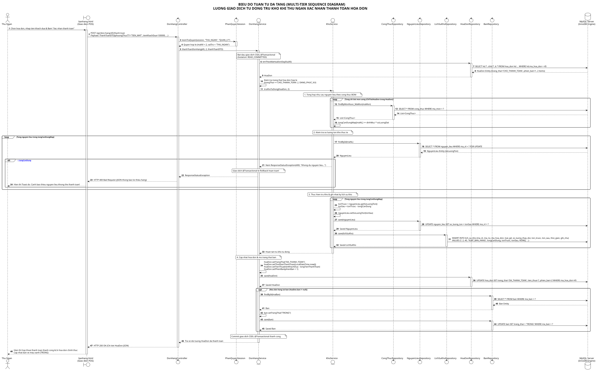
🔒
Sơ Đồ Tuần Tự Trừ Kho (Sequence Diagram)
Thuật toán khóa TreeMap theo thứ tự ID tăng dần triệt tiêu Deadlock.
Sơ đồ Tuần Tự Trừ Kho Tự Động Chống Deadlock
Gợi ý file: diagram/Sequence_TruKho.svg
"Đây là bài toán kỹ thuật phức tạp nhất mà em đã giải quyết: Trong giờ cao điểm F&B, hàng chục bàn cùng gọi món có chung Sữa tươi và Cà phê Robusta. Nếu hai thu ngân bấm thanh toán cùng lúc, giao dịch A khóa Sữa rồi chờ Cà phê, trong khi giao dịch B khóa Cà phê rồi chờ Sữa -> gây Deadlock chết cứng hệ thống! Nhóm giải quyết bằng cách: Toàn bộ quá trình bọc trong @Transactional với mức cô lập READ_COMMITTED. Hệ thống sử dụng cấu trúc TreeMap để gom tổng định mức và tự động sắp xếp danh sách mã nguyên liệu theo thứ tự ID tăng dần trước khi thực thi khóa bi quan SELECT FOR UPDATE. Nhờ cùng xếp hàng lấy khóa theo một trật tự duy nhất, hệ thống triệt tiêu 100% điều kiện Circular Wait, vừa không bao giờ bị Deadlock, vừa không bao giờ bán âm kho! Đồng thời, mọi biến động đều được ghi vào Sổ nhật ký lich_su_kho để phục vụ kiểm kê hao hụt cuối ngày."
15.
[LIVE DEMO 3] Trừ Kho BOM, Sổ Nhật Ký, Nhập Kho WAC & KPI Dashboard
🎬 TRỰC QUAN HÓA THAO TÁC DEMO THỰC TẾ (kho.html)
Minh chứng khấu trừ kho tự động, sổ nhật ký, WAC và Executive KPI:
1
Minh chứng Trừ kho tự động: Sau Demo 1, Hạt Robusta trừ đúng $25\text{ g}$, Sữa tươi trừ $180\text{ ml}$, Siro Đào trừ $25\text{ ml}$ ngay tức thì.
2
Sổ Nhật ký Biến động kho: 3 dòng XUAT_BAN_HANG ghi rõ mã Hóa đơn Bàn 03, tên Thu ngân, tồn trước/tồn sau khớp $100\%$.
3
Nhập kho tính WAC & Báo đỏ: Bột Matcha Uji tồn $80\text{ g} \le 100\text{ g}$ báo đỏ $\r\rightarrow$ Nhập kho $+500\text{ g}$ $\r\rightarrow$ WAC tính lại, báo đỏ chuyển xanh "Đủ hàng".
4
Kiểm kê hao hụt: Nhập hao hụt $50\text{ ml}$ Siro Đào do vỡ nắp chai $\r\rightarrow$ Ghi dòng KIEM_KE_HAO_HUT, tính giá trị tổn thất vào báo cáo.
5
Executive KPI Dashboard: 6 thẻ KPI (Doanh thu thuần, COGS, Lợi nhuận gộp $79\%$, Đối soát Tiền mặt vs QR, Top 5 món bán chạy nhất).
📌 NOTE: VỊ TRÍ ĐẶT SƠ ĐỒ HOẠT ĐỘNG KHO DEMO
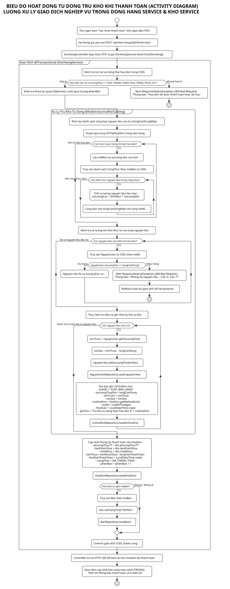
📊
Sơ Đồ Hoạt Động Trừ Kho & Quản Trị Kho (Activity Diagram)
Quy trình trừ kho BOM ngầm, nhập kho WAC và cập nhật KPI Dashboard.
Sơ đồ Hoạt Động Trừ Kho & Quản Trị Kho (Activity Diagram)
Gợi ý file: diagram/Activity_TruKho.svg
"(Duy thao tác trực tiếp trên trình duyệt) Thưa Cô, em mở trang kho.html trên tài khoản Quản lý: 1. Tại Tab Tồn kho, sau khi bạn Quý thanh toán Bàn 03, Hạt cà phê Robusta đã tự động trừ đúng 25g, Sữa tươi trừ đúng 180ml, Siro Đào trừ đúng 25ml ngay tức thì mà thủ kho không cần gõ tay bất kỳ dòng nào! 2. Chuyển sang Tab 3 'Nhật ký biến động kho', 3 dòng giao dịch XUAT_BAN_HANG xuất hiện rõ ràng, gắn liền mã hóa đơn Bàn 03, tên Thu ngân, tồn trước và tồn sau khớp 100%. 3. Tại dòng Bột Matcha Uji, tồn kho chỉ còn 80g nhỏ hơn ngưỡng an toàn 100g, hệ thống đang bật nhãn đỏ cảnh báo 'SẮP HẾT HÀNG'. Em bấm 'Nhập kho', dùng nút preset nhập nhanh +500g với đơn giá mới -> Tồn kho cập nhật lên 580g, đơn giá vốn được tính lại theo WAC, nhãn đỏ biến mất và khôi phục nhãn xanh 'Đủ hàng'. 4. Cuối ca kiểm kê, thấy Siro Đào bị đổ vỡ 50ml, em bấm 'Kiểm kê' nhập lý do vỡ nắp chai -> Hệ thống ghi nhận dòng KIEM_KE_HAO_HUT và tính giá trị thiệt hại tài chính. 5. Phía trên là 6 thẻ KPI Dashboard: Doanh thu thuần, COGS, Lợi nhuận gộp 79%, đối soát Tiền mặt vs QR và Top 5 món bán chạy nhất với Cà phê Muối dẫn đầu."
16.
Tổng Kết Kiểm Thử (19/19 Tests Pass), Đánh Giá Thực Tiễn & Q&A
✓
Kết quả kiểm thử tự động toàn diện:
• Backend Integration Test: 19/19 Tests PASS (100% BUILD SUCCESS) trên H2 In-Memory tách biệt (5 ca POS & Soft Reservation, 6 ca Kho WAC & Deadlock, 8 ca Chấm công & Scheduler).
• Web E2E Test (Chrome Automation): 16/16 Scenarios PASS (100%).
• Khắc phục triệt để các lỗi phân quyền, deadlock và font tiếng Việt.
🚀
Chiến lược chuyển giao: Áp dụng phương pháp Chuyển đổi trực tiếp đầu tuần (Direct Cutover on Monday) với chi phí thấp, dữ liệu ban đầu tinh gọn và vận hành ngay.
🤝
KẾT LUẬN & Q&A: Nhóm chân thành cảm ơn TS. Hồ Thị Linh đã tận tình hướng dẫn! Kính mời Cô và Hội đồng đặt câu hỏi phản biện.
📌 NOTE: VỊ TRÍ ĐẶT BẢNG KẾT QUẢ TEST & CẢM ƠN

🏆
Khung chèn Bảng Nghiệm Thu Đồ Án (100% PASS)
19/19 Ca kiểm thử Backend & 16/16 Kịch bản Web E2E hoàn thành xuất sắc.
Bảng Tổng Hợp Kiểm Thử Nghiệm Thu & Lời Cảm Ơn
Gợi ý file: screenshots/01_dang_nhap.png
"Kính thưa Cô, để bảo chứng cho độ tin cậy của phần mềm: Toàn bộ mã nguồn đã vượt qua xuất sắc 19/19 ca kiểm thử tích hợp tự động Backend đạt 100% BUILD SUCCESS chạy trên môi trường H2 In-Memory độc lập: gồm 5 ca kiểm thử POS Soft Reservation, 6 ca kiểm thử Kho WAC chống Deadlock, và 8 ca kiểm thử Chấm công du di 15 phút cùng scheduler chốt ca quá hạn. Đồng thời vượt qua 16/16 kịch bản kiểm thử hộp đen E2E tự động trên trình duyệt Chrome. Nhóm đề xuất chiến lược chuyển giao trực tiếp vào đầu tuần (Direct Cutover on Monday) để đưa phần mềm vào vận hành thực tế. Hệ thống đã hoàn thiện trọn vẹn cả về mặt học thuật Kỹ nghệ yêu cầu lẫn giá trị ứng dụng thực tiễn cho ngành F&B. Bài thuyết trình của nhóm đến đây là kết thúc. Chúng em xin chân thành cảm ơn Cô và kính mời Cô đặt câu hỏi phản biện cho nhóm ạ!"